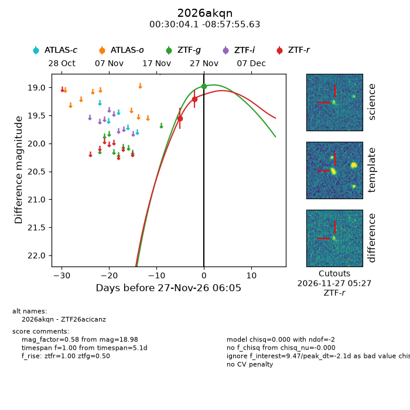
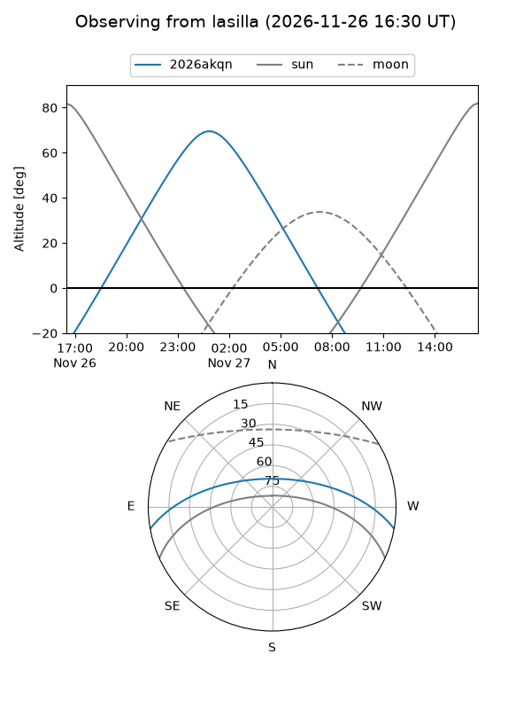
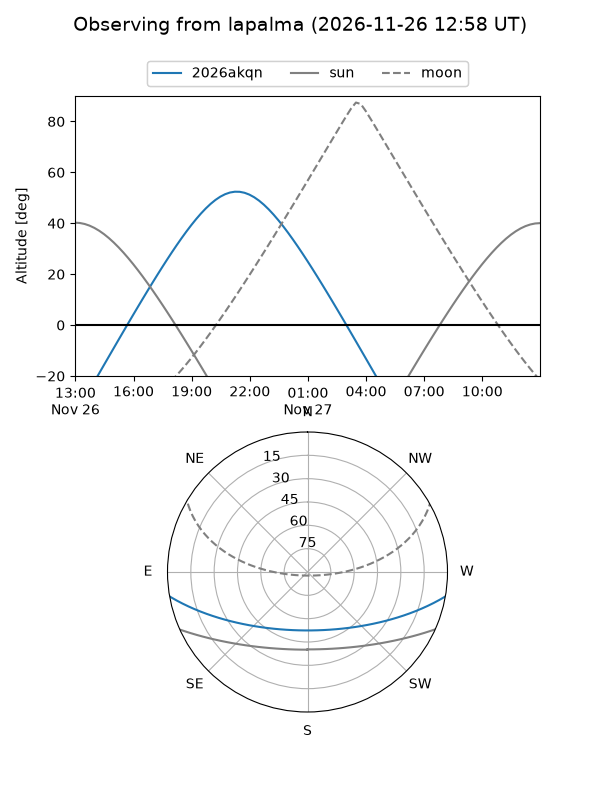
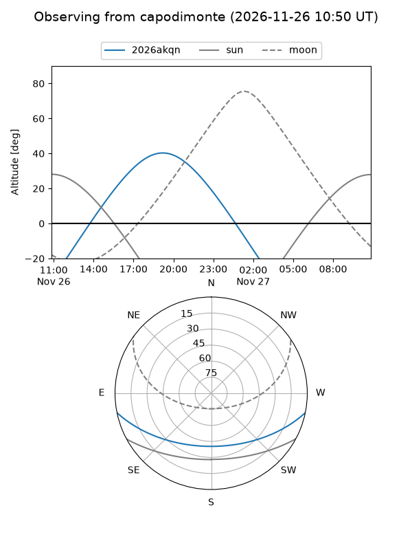
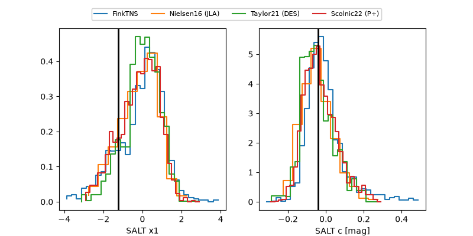

2026akqn
Target 2026akqn at 2026-11-27 06:06
Aliases and brokers:
FINK-ZTF: ztf.fink-portal.org/ZTF26acicanz
Lasair-ZTF: lasair-ztf.lsst.ac.uk/objects/ZTF26acicanz
ALeRCE-ZTF: alerce.online/object/ZTF26acicanz
YSE-PZ: ziggy.ucolick.org/yse/transient_detail/2026akqn
TNS name: wis-tns.org/object/2026akqn
Direct TNS query: direct search
alt names
ZTF26acicanz (ztf,fink_ztf)
2026akqn (tns,yse)
Coordinates:
equatorial (ra, dec) = 7.5172,-8.96545
equatorial (HMS+DMS) = 00:30:04.12,-08:57:55.63
galactic (l, b) = (106.3958,-71.14792)
Flags:
peak dt: -2.1
Photometry:
last ztfg=18.98, ztfr=19.20
1 ztfg, 2 ztfr detections
Lightcurve

Visibility



Additional plots
